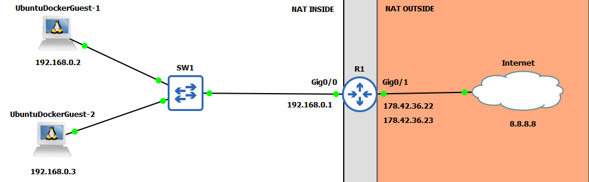
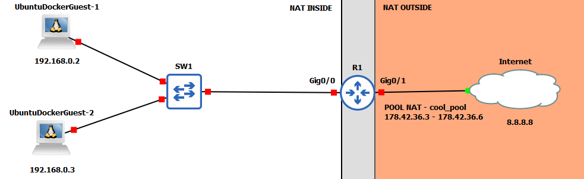
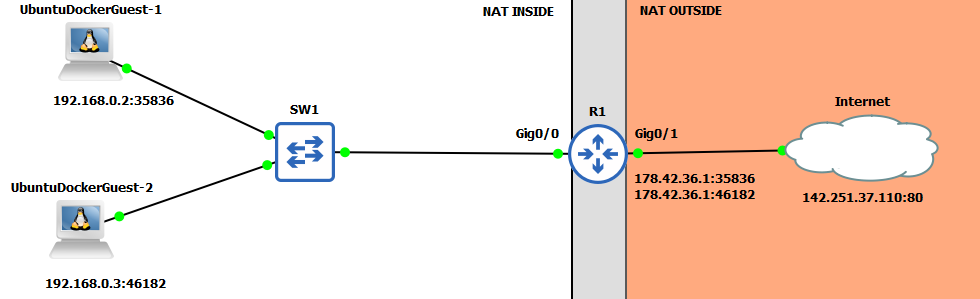

A
B
C
D
S obrovským rozmachem Internetu vznikla na počátku 90. let minulého století predikce, podle níž by mělo dojít k úplnému vyčerpání IPv4 adres v polovině 90.let. Toto zjištění nebylo vůbec pěkné a muselo se rychle konat, proto síťaři přišli s krátkodobými řešeními, jejichž kombinace vyčerpání na pár let oddálila. Těmito řešeními byl CIDR, Private Addressing a NAT (především ale vlastně PAT).
Classless Inter-Domain Routing byl v té době vskutku revoluční změnou, která navždy ovlivnila IPv4 adresaci.
Do té doby byla IPv4 adresace tzv. "Classful" - IPv4 adresy byly rozděleny do tříd A, B, C, s pevně danou délkou (A - /8, B - /16 a C - /24) - pozn. existovala pak ještě třída D, která sloužila k multicastu a třída E, která byla experimentální. Tento blok adres jste pak dle vaší spotřeby dostali přidělený. Obrovským problémem zde ale bylo to, že pokud jste se nevešli o pár hostů do C třídy (potřebovali jste 257 hostů), tak vám museli přiděli třídu B, která byla několikanásobně větší (65534 dostupných adres) a adresami se tak zbytečně plýtvalo ve velkém.
CIDR měl tomuto plýtvání zabránit a představil, tak revoluční změnu, která síťařům umožňovala přiřadit komukoliv jak velký blok adres byl potřeba - v příkladu z minulé věty by teda namísto /16 dostal /23 blok.
Tato změna pak měla pozitivní dopad na velikost směrovací tabulky.
Dalším řešením bylo představení privátních adres. Ty mají sloužit pro ta zařízení u nichž se NEpředpokládá, že by měli někdy sami o sobě přístup k Internetu.
Pro tenhle účel IANA (Organizace, která dohlíží na přidělování IP adres) vyčlenila bloky adres - 10.0.0.0/8, 172.16.0.0/12, 192.168.0.0/16. Adresy definované v těchto blocích nemůžou být nikdy přiděleny nikomu (registrovaně) a také nejsou směrovatelné.
Jinými slovy, pokud neplánujete zařízení vůbec připojovat k Internetu či používat NAT/PAT, tak budete používat adresy z jednoho z těchto bloků.
NAT byl posledním dílem skládačky, co se týče krátkodobého řešení nedostatku IPv4 adres. NAT nebo-li Network Address Translation umožňuje hostům s privátní adresou komunikovat s Internetem. To může dělat díky tomu, že NAT právě tyto privátní adresy "překládá" na veřejné.
NAT se dělí podle toho co mapuje na co. Pokud se mění zdrojová (source) IPv4 adresa, tak mluvíme o source NAT, pokud se mění adresa příjemce (destination) IPv4 adresa, tak mluvíme o destination NAT. My se zde budeme bavit pouze o zdrojové (source) NAT, nebude-li to specifikováno jinak.
Jsou 3 způsoby, jak může NAT překládat privátní adresy na veřejné - statický, dynamický a PAT.
V NAT se často setkáte s výrazy Inside Local, Inside Global, Outside Local a Outside Global.
Pojďme si tyto pojmy vysvětlit na příkladu:
Inside Local značí adresu vnitřního přístroje z pohledu vnitřní sítě.
Z toho tedy vyplývá, že IP adresy 192.168.0.2 a 192.168.0.3 jsou Inside Local.
Inside Global poté označuje adresu vnitřního přístoje z pohledu vnější sítě.
Proto by do této kategorie spadaly IP adresy 178.42.36.22 a 178.42.36.23.
Outside Local poukazuje na adresu vnějšího přístroje z pohledu vnitřní sítě.
Tuto definici v našem případě naplňuje IP adresa 8.8.8.8.
Outside Global ukazuje na adresu vnějšího přístroje z pohledu vnější sítě.
V našem případě toto opět naplňuje IP adresa 8.8.8.8.
Je nutný zde také napsat, že ne vždy jsou Outside Local a Outside Global stejné, existuje totiž ještě destination NAT (Zde to probíráme z pohledu source NAT), kde jsou tyto IP adresy různé.
Rozdíl mezi Source NAT a Destination NAT je pak ten, že Source NAT mění v paketu IP adresu odesílatele, kdežto Destination NAT mění v paketu IP adresu příjemce.
| Termín | IP v příkladu | Vysvětlení |
|---|---|---|
| Inside Local/Privátní adresa | 192.168.0.2, 192.168.0.3 | IP adresa vnitřního přístroje z pohledu vnitřní sítě |
| Inside Global/Veřejná adresa | 178.42.36.22, 178.42.36.23 | IP adresa vnitřního přístroje z pohledu vnější sítě |
| Outside Local | 8.8.8.8 | IP adresa vnějšího přístroje z pohledu vnitřní sítě |
| Outside Global | 8.8.8.8 | IP adresa vnějšího přístroje z pohledu vnější sítě |
Statická NAT funguje tak, že překládá jednu privátní IPv4 adresu na jednu veřejnou IPv4 adresu.
Názorný příklad - Jak tedy funguje statická NAT?
Co se tedy v našem případě stane?
Pokud UbuntuDockerGuest-1 se bude snažit pingnout IP adresu 8.8.8.8, tak v celé oblasti NAT INSIDE bude paket mít zdrojovou IP adresu 192.168.0.2. Jakmile paket dojde na R1 dojde k překladu ze 192.168.0.2 na 178.42.36.22 a celý Internet, tak bude komunikovat s UbuntuDockerGuest-1 jako s 178.42.36.22.
Když mu pak 8.8.8.8 bude posílat ICMP ECHO REPLY zprávu bude s ním komunikovat pod jeho veřejnou IP adresou - 178.42.36.22, jakmile paket dorazí na R1, dojde opět k překladu ze 178.42.36.22 na 192.168.0.2.
Pro UbuntuDockerGuest-2 by to bylo naprosto stejné akorát, že by jeho veřejná IP adresa byla 178.42.36.23.
Na tomto příkladě si můžeme všimnout, že statická NAT nám úplně IP adresy neušetří, protože na 1 privátní IP adresu, potřebujeme mít 1 veřejnou, nicméně je nutné uvést to, že NAT jako taková má pozitivní vliv na bezpečnost síťě - žádné zařízení z Internetu nás nemůže kontaktovat, pokud ho my nekontaktujeme.
Př. Nakonfigurujte statickou source NAT na R1:
Nejdříve si na R1 určíme inside (gig0/0) a outside (gig0/1) NAT interfaci
R1(config)#interface gig0/0 R1(config-if)#ip nat inside R1(config-if)#interface gig0/1 R1(config-if)#ip nat outside
Poté již stačí v globálním configu R1 nastavit jednotlivá mapování
R1(config)#ip nat inside source static 192.168.0.2 178.42.36.22 R1(config)#ip nat inside source static 192.168.0.3 178.42.36.23
LAB UMÍSTIT KE STAŽENÍ ZDE!!!!!!!
Dynamická NAT funguje podobně jako statická na principu mapování jedné privátní na jednu veřejnou IPv4 adresu. Rozdíl zde je v tom, že tentokrát ta veřejná IPv4 adresa není stálá a je vybírána dynamicky z tzv. poolu.
Pool nám definuje rozsah inside global (veřejných IPv4) adres, které bude následovně po omezenou dobu přidělovat určitým inside local (privátním IPv4) adresám.
Stejně jako statická NAT nás nezbaví našeho problému s nedostatkem veřejných IPv4 adres. Nicméně i dynamická NAT má pozitivní vliv na bezpečnost síťě.
Názorný příklad - Jak tedy funguje dynamická NAT?
Pokud se v tomto případě bude snažit host UbuntuDockerGuest-1 pingnout IP adresu 8.8.8.8, tak klasicky bude platit, že v celé oblasti NAT INSIDE bude tento paket vystupovat pod svoji privátní IPv4 adresou (192.168.0.2).
Jakmile se tento paket dostane na R1, zkontroluje se pravidlo v ACL, které určí, které privátní adresy mají být přeloženy na veřejné adresy z NAT Poolu.
Poté se tedy té dané privátní adrese přidělí 1 veřejná IP adresa z NAT Poolu a přes tuto IP adresu bude zařízení komunikovat.
Co se ale stane, jestliže vyčerpáme všechny veřejné IP adresy z našeho NAT Poolu?
Pokud byl náš pool zcela vyčerpán a do síťě se připojí nový host, tak všechen jeho provoz mířící mimo NAT INSIDE bude na routeru dropnutý do doby než nějakému jinému hostovi vyprší zapůjčení veřejné IP adresy z poolu nebo se všechna tato zapůjčení manuálně odstraní.
Př. Nakonfigurujte dynamickou NAT na R1:
Prvně si opět určíme inside a outside interfaci
R1(config)#interface gig0/0 R1(config-if)#ip nat inside R1(config-if)#interface gig0/1 R1(config-if)#ip nat outside
Dále budeme muset vytvořit ACL, které specifikuje ty privátní IP adresy, které se budou "překládat" na veřejné IP adresy.
R1(config)#access-list 1 permit 192.168.0.0 0.0.0.7
Tímto příkazem jsme tedy zapříčinili to, že všechny pakety pocházející ze subnety 192.168.0.0/29 budou přeloženy na veřejnou IP adresu bude-li to možné na základě vytíženosti poolu.
Nyní definujeme pool -
R1(config)#ip nat pool cool_pool 178.42.36.1 178.42.36.6 netmask 255.255.255.248
pozn. To jestli jsou adresy v rozsahu v jedné subnetě kontroluje právě netmask
A nakonec toto vše dáme dohromady -
R1(config)#ip nat inside source list 1 pool cool_pool
LAB UMÍSTIT KE STAŽENÍ ZDE!!!!!!!
Nakonec tu máme ještě PAT, která konečně z krátkodobého hlediska řeší nedostatek IPv4 adres. PAT nám mapuje několik privátních IPv4 adres na jednu veřejnou IPv4 adresu.
Jakpak ale R1 ví, který paket je určený pro kterého hosta v NAT INSIDE síti?
PAT k tomuto účelu využívá L4 porty, pomocí kterých dokáže odlišit, kterému zařízení v NAT INSIDE síti patří paket, který mu přišel z NAT OUTSIDE sítě.
Názorný příklad 1 - Jak tedy funguje statická PAT?
UbuntuDockerGuest-1 a UbuntuDockerGuest-2 se snaží dostat na 142.251.37.110:80, vytvoří tedy paket se svoji privátní IPv4 adresou a náhodným source portem.
Tyto pakety se dostanou na router, kde se nejdříve zjistí, jestli se na ně náhodou nevztahuje PAT. V našem případě se na ně PAT vztahuje, a tak budou zdrojové IPv4 adresy přeloženy na veřejnou IPv4 adresu.
Jestliže jsou zdrojové porty u obou hostů již zpočátku různé, tak je již dokonáno a sockety (IPv4 adresa:port) jsou vepsány do překladové tabulky NAT. Pokud by tak ale nebylo a oba zdrojové porty by byly stejné, tak by se jeden musel na routeru změnit.
Když se 142.251.37.110 bude snažit komunikovat s hosty využije k tomu z jeho pohledu právě porty. Porty pak na routeru správně identifikují jednotlivé hosty spolu s IP adresami.
Př. Nakonfigurujte PAT na R1:
Stejně jako v předešlých konfiguracích nejdříve nakonfigurujeme NAT INSIDE a NAT OUTSIDE.
R1(config)#interface gig0/0 R1(config-if)#ip nat inside R1(config-if)#interface gig0/1 R1(config-if)#ip nat outside
Dále vytvoříme ACL, která routeru stejně jako u dynamické NAT říká, které IP adresy bude překládat.
R1(config)#access-list 1 permit 192.168.0.0 0.0.0.7
Nyní stačí již nakonfigurovat samotný PAT
R1(config)#ip nat inside source list 1 interface gig0/1 overload
Tímto příkazem jsme routeru řekli, že má přeložit všechny privátní IPv4 adresy, které naplňují ACL, a použít k tomu IP adresu, která je nakonfigurovaná na interfacu gig0/1. Klíčové slovíčko overload pak zapne PAT.
Při práci s NAT se může stát, že někde uděláte chybu, proto vám představím příkazy, které vám můžou pomoci danou chybu odhalit.
Prvním příkazem je show ip nat translations. Tento příkaz vám zobrazí mapování jednotlivých privátních adres na veřejné adresy, takže se vám může hodit například, pokud si nejste jistý, jestli jste neprohodili privátní a veřejnou adresu.
Pokud narazíte na špatné mapování možná by se vám mohl hodit (obzvláště při dynamické NAT) příkaz clear ip nat translations *, který vyčistí všechna dosavadní zmapování.
Posledním příkazem je show ip nat statistics, ten vám zas pro změnu ukáže aktuální počet záznamů v překladové tabulce NAT, či které interfaci jsou označeny jako NAT INSIDE a NAT OUTSIDE.
| Příkazy | Popis | Mód |
|---|---|---|
| ip nat {inside | outside} | Nastaví interface jako NAT INSIDE nebo NAT OUTSIDE | Interface |
| ip nat inside source static {inside-local-address} {inside-global-address} | Nastaví statickou NAT | Global Config |
| ip nat pool {název_poolu} {start-ip} {end-ip} netmask {netmask} | Definuje "pool" NAT adres | Global Config |
| ip nat inside source list {access-list-number | access-list-name} pool {pool-name} | Nastaví dynamickou NAT | Global Config |
| ip nat inside source list {access-list-number | access-list-name} interface {interface} overload | Nastaví PAT | Interface |
| show ip nat statistics | Zobrazí základní informace o NAT | privileged EXEC |
| show ip nat translations | Zobrazí překladovou tabulku NAT | privileged EXEC |
| clear ip nat translation * | Vyčistí všechny záznamy v překladové tabulce NAT | privileged EXEC |
NAT je protokol, který dokázal společně s privátní adresací a CIDRem prodloužit životnost IPv4 o několik let.
NAT funguje na principu rozdělení sítě na vnitřní/vnější - ve vnitřní síti se používají privátní IPv4 adresy (Inside Local) a ve vnější se používají veřejné IPv4 adresy (Inside Global).
Jsou 3 typy source NAT - statická, dynamická a PAT (NAT Overload).
Statická mapuje jednu privátní IPv4 adresu na 1 veřejnou IPv4 adresu.
Dynamická překládá jednu privátní IPv4 adresu na 1 veřejnou IPv4 adresu, která se dynamicky vybírá z poolu.
Nejpoužívanější typ NAT - PAT (NAT Overload) pak překládá několik veřejných IPv4 adres na jednu veřejnou IPv4 adresu - toho se dost často využívá v domacích sítí. PAT poté rozlišuje jednotlivá zařízení pomocí portů, které jsou společně s IP adresami uložené v překladové tabulce NAT.
NAT také zvyšuje bezpečnost vnitřní sítě - zařízení mimo vnitřní síť nemůže komunikovat se zařízením ve vnitřní síti, do té do doby než ho zařízení z vnitřní sítě samo kontaktuje.
A
B
C
D